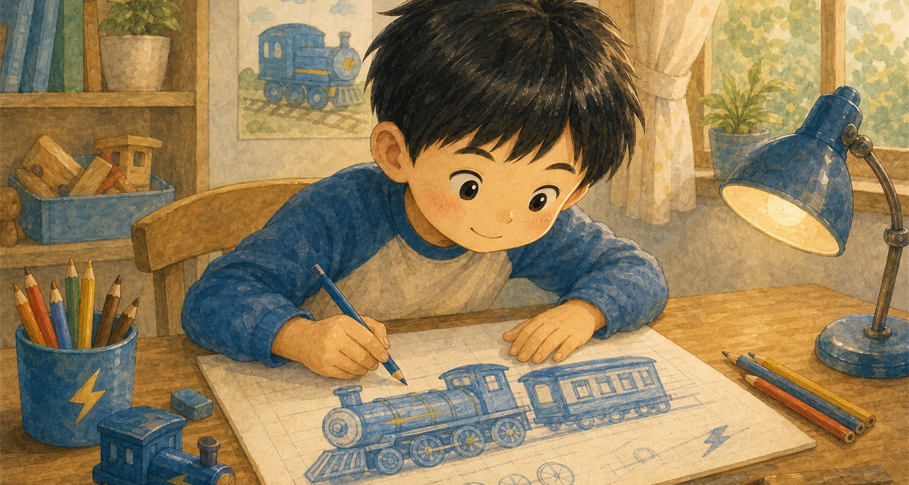
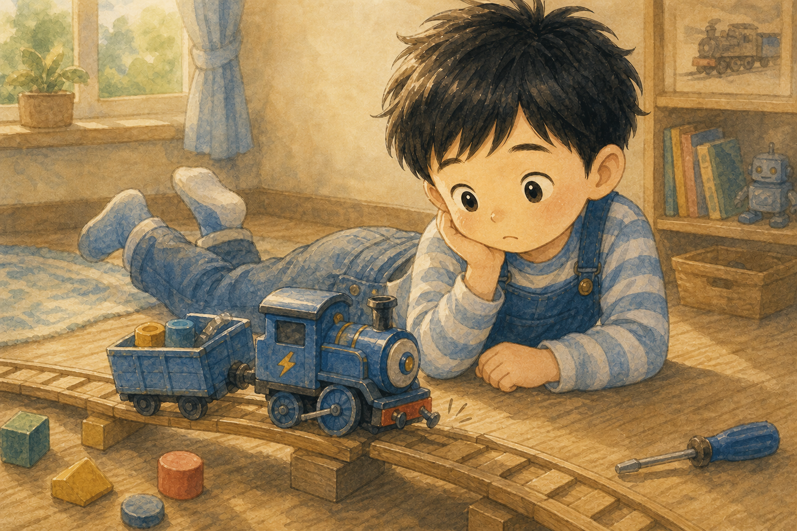
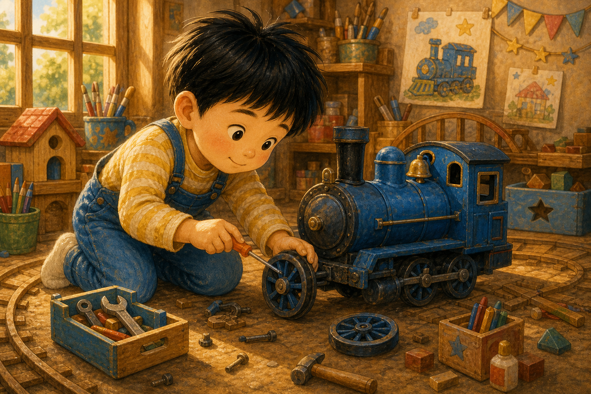
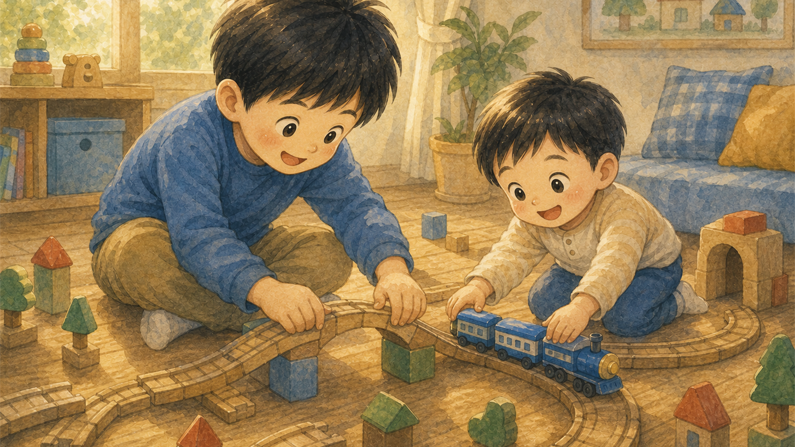
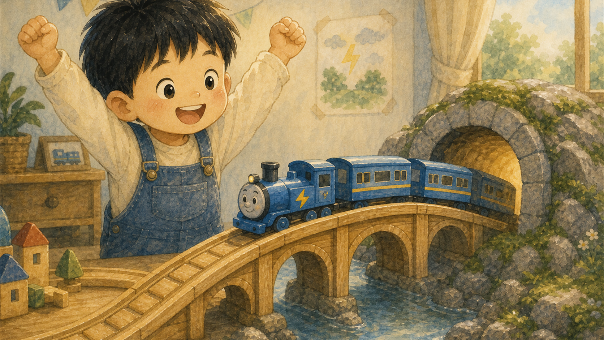
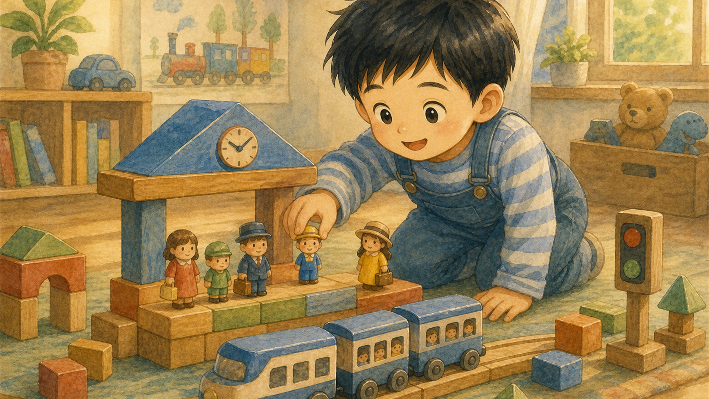
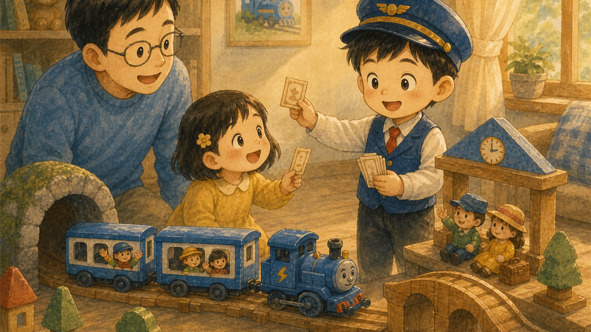
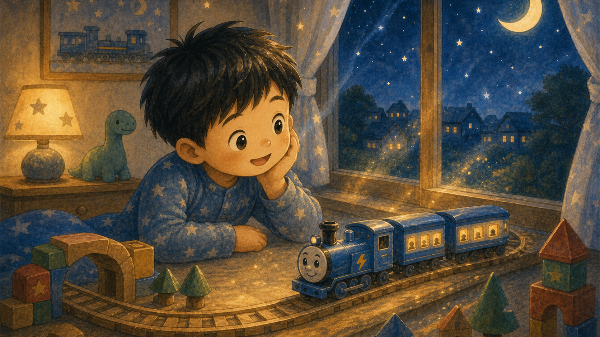
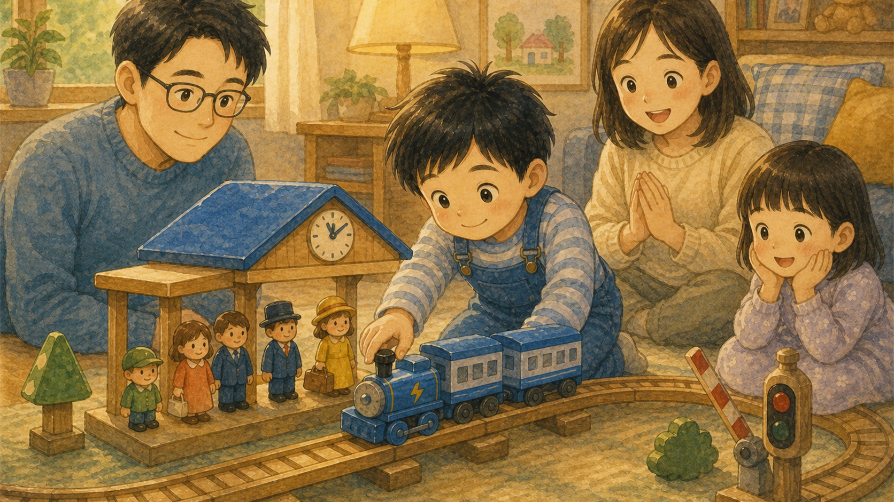
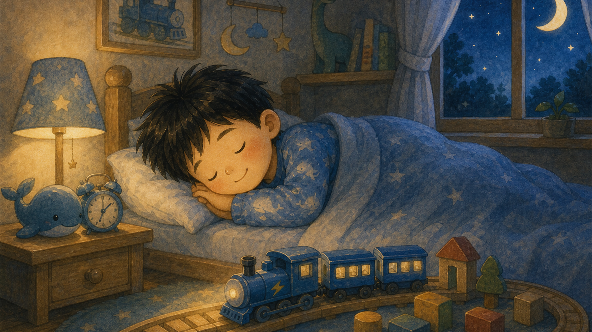

파란 기차 설계도
하람이는 종이 위에 멋진 기차를 그렸어요. 바퀴는 동그랗게, 창문은 반짝반짝하게 색칠했지요.
"오늘은 내가 기관사이자 발명가야!"

하람이는 종이 위에 멋진 기차를 그렸어요. 바퀴는 동그랗게, 창문은 반짝반짝하게 색칠했지요.
"오늘은 내가 기관사이자 발명가야!"

기차가 레일 위에 올라가자마자 덜컹 하고 멈췄어요. 바퀴 하나가 살짝 삐뚤어져 있었거든요.
하람이는 속상했지만 다시 살펴보기로 했어요.

하람이는 작은 장난감 도구로 바퀴를 천천히 맞췄어요. 급하게 하지 않으니 기차가 조금씩 반듯해졌지요.
고치는 시간도 만드는 시간만큼 중요했어요.

동생이 블록을 가져와 긴 다리를 만들었어요. 하람이는 다리 밑을 지나가는 터널까지 연결했지요.
함께 만드니 기차길이 훨씬 길어졌어요.

파란 기차는 조심조심 다리를 올라 터널을 지나갔어요. 이번에는 멈추지 않고 끝까지 달렸답니다.
하람이는 두 손을 번쩍 들었어요.

하람이는 블록으로 작은 역을 만들고 장난감 승객들을 세웠어요. 기차가 도착하자 모두 여행을 기다리는 것 같았지요.
상상 속 역에는 누구나 탈 수 있었어요.

하람이는 기관사처럼 허리를 펴고 기차를 출발시켰어요. 작은 표를 나누어 주며 가족 여행을 시작했지요.
"상상나라행 기차가 출발합니다!"

기차가 창문 앞을 지날 때 방 안이 별빛으로 반짝였어요. 하람이는 기차가 상상나라로 달리는 것처럼 느꼈답니다.
작은 레일은 커다란 꿈길이 되었어요.

가족들은 기차 주변에 모여 앉았어요. 하람이는 천천히 기차를 세우고 다음 승객을 기다렸지요.
혼자 만든 기차가 모두의 놀이가 되었어요.

밤이 되자 하람이는 기차 옆에서 잠들었어요. 파란 기차는 작게 반짝이며 내일의 여행을 기다렸답니다.
하람이는 포기하지 않으면 꿈도 달릴 수 있다는 걸 알았어요.